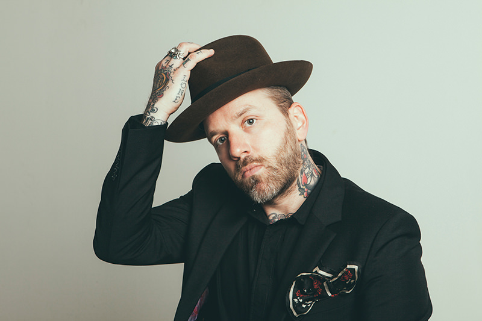

Dallas Green

Dallas Green Figure Caption
Here's the projects Dallas Green has been in:
- Before joining Alexisonfire, Green was in a band called
Helicon Blue.
- Dallas began playing with Alexisonfire in late 2001.
They released four albums and several EPs before disbanding
in 2011 due to Dallas'
decision to focus on his work in City and Colour full-time.
- Green began releasing City and Colour songs on the internet
for fans to download.
Eventually, he compiled and rewrote several of these songs to
make his first album, Sometime
- On September 8, 2014, Green announced a collaboration with Pink.
The duo, performing under the name You+Me, released an album titled
Rose Ave. on October 14.
The album debuted at number one on the Canadian Albums Chart and at
number four on the Billboard 200.
You can find more about Dallas Green on his website